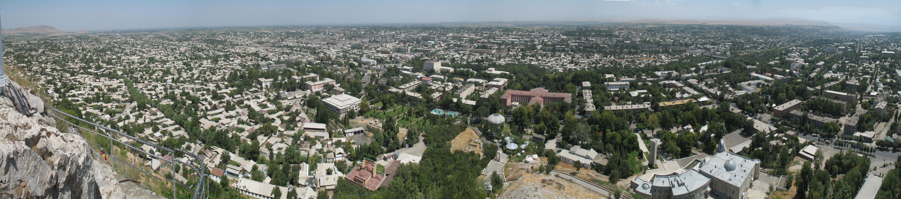

Uzbeks in Kyrgyzstan: the historic community of Osh and the south
Uzbeks in Kyrgyzstan are the country's largest ethnic minority (about 1 million people, roughly 15% of the population), living mainly in the south — the Osh, Jalal-Abad, and Batken provinces, in the edge of the Fergana Valley. They are not an immigrant diaspora but a settled local community: their position on the other side of the state border resulted from the Soviet national-territorial delimitation of 1924. Below, the community's historic roots, demographics, the tragic events of 1990 and 2010, and its subsequent situation are presented neutrally and strictly on the basis of reputable sources.

Uzbeks in Kyrgyzstan are one of the largest Uzbek communities in Central Asia and the largest ethnic minority of Kyrgyzstan. This article presents the community's historic roots, location, demographics, and the interethnic clashes of 1990 and 2010 strictly on the basis of reputable sources — Minority Rights Group, UN-related reports, the independent commission of inquiry (KIC) under the auspices of the OSCE Parliamentary Assembly, and human-rights organizations, neutrally and on a facts-only basis. The aim is not to judge events but to present documented historical facts.
Historic roots: not an immigrant diaspora but a local community
Uzbeks in Kyrgyzstan are not recent immigrants but descendants of a settled population that has lived in the Fergana Valley for centuries. Osh, Uzgen, and other towns of the valley were long centers of trade, crafts, and farming. The modern minority status arose from the Soviet national-territorial delimitation of 1924: that process created the Kyrgyz Autonomous Soviet Socialist Republic (later the Kyrgyz SSR) and the Uzbek SSR. Because the borders did not exactly match ethnic settlement, a large Uzbek population of the Fergana Valley remained on Kyrgyz territory — making them an ethnic minority of the new republic.
Demographics and location
According to the National Statistics Committee of the Kyrgyz Republic, Uzbeks make up about 15 percent of the country's population and number roughly one million people — making them the country's largest ethnic minority. The community is concentrated mainly in the south — the Osh, Jalal-Abad, and Batken provinces and the cities of Osh and Uzgen. According to Minority Rights Group, about 40 percent of Kyrgyzstan's Uzbeks live in Osh Province, and in some districts they form a significant share or a majority of the population. The community has traditionally been active in trade, crafts, and agriculture.
The 1990 Osh events
On the eve of the Soviet Union's collapse, in June 1990, interethnic clashes broke out between the Kyrgyz and Uzbek communities in Osh Province. The conflict began from a dispute over land allocation and turned into violence around Osh and Uzgen. By some accounts, about 300 people died in the clashes; figures differ across official and independent sources. The Soviet government brought troops into the area and took control of the situation. These events showed how deep interethnic tension in southern Kyrgyzstan was.
The 2010 southern Kyrgyzstan events
On 10–14 June 2010, large-scale interethnic violence again erupted in Osh and Jalal-Abad, against the backdrop of political instability after the change of power on 7 April. According to official data, at least 426 people died in the four days of violence — among them 276 Uzbeks, 105 Kyrgyz, and 45 whose ethnicity was not identified; some sources reported 446 or more victims. According to the UN and international organizations, about 400,000 people were forced to leave their homes, of whom roughly 111,000 crossed into Uzbekistan as temporary refugees. To examine the events, an independent international commission of inquiry (KIC), chaired by the Finnish parliamentarian Kimmo Kiljunen under the auspices of the OSCE Parliamentary Assembly, was set up in July 2010.
The situation after the events
After the 2010 events, Minority Rights Group and human-rights organizations recorded that Uzbeks in southern Kyrgyzstan faced pressure in the legal, economic, and political spheres. Despite their large numbers, the community has been underrepresented in political power: according to reports, after 2010 Uzbeks made up about 14 percent of the population but only 2.5 percent of the national parliament. Uzbek-language local media have also been limited.
Language and culture
Uzbeks in Kyrgyzstan mainly speak Uzbek and also know Kyrgyz and Russian. The community has preserved a centuries-old cultural heritage — architecture, cuisine, crafts, and religious traditions (Sunni Islam of the Hanafi school). Historic monuments in Osh and Uzgen, including Sulaiman-Too mountain, inscribed on the UNESCO World Heritage List, attest to the region's centuries-long settled history.
Conclusion
The Uzbek community of Kyrgyzstan is an integral part of the region's complex ethnic and political history. This article presents only documented facts — demographics, historic roots, and major events — on the basis of reputable sources; a full assessment of the causes and consequences of the events is the subject of international inquiries and scholarly analysis.
Sources
- Minority Rights Group — Uzbeks in Kyrgyzstan (demografiya, joylashuv, vakillik)
- Wikipedia — Uzbeks in Kyrgyzstan (soni, janubiy shaharlar, 1924 chegaralanish)
- Wikipedia — 2010 South Kyrgyzstan ethnic clashes (sana, qurbonlar, KIC)
- Human Rights Watch — Interethnic violence in southern Kyrgyzstan and its aftermath (2010)
- Wikipedia — 1990 Osh riots (iyun 1990 voqealari)